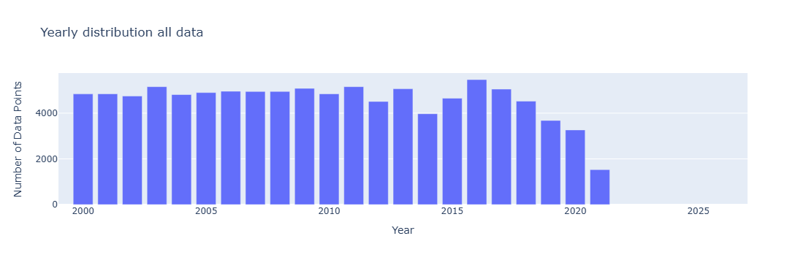
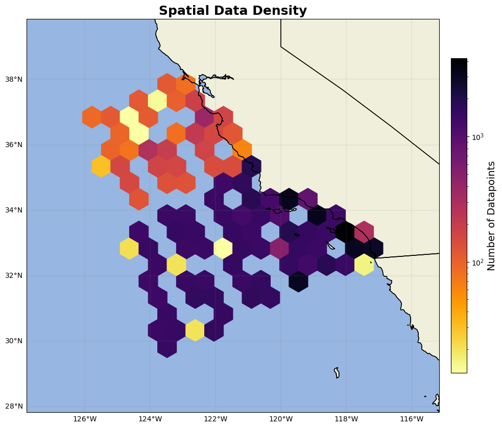

CalCOFI data#
All CalCOFI data downloaded from CalCOFI Bottle data: https://calcofi.org/data/oceanographic-data/bottle-database/
NOTE download both Cast Table and Bottle Table to line up metadata correctly
Once both the cast and bottle data were downloaded and imported into python, the dataframes were reduced and a single datetime column created.
import numpy as np
import pandas as pd
import matplotlib.pyplot as plt
import cartopy
import cartopy.crs as ccrs
import cartopy.feature as cfeature
from cartopy.mpl.gridliner import LONGITUDE_FORMATTER, LATITUDE_FORMATTER
import geopandas as gpd
from datetime import datetime
import os
from matplotlib import ticker
import datetime as dt
import plotly.express as px
import cmocean as cm
import cmocean.cm as cmo
import matplotlib.gridspec as gridspec
import time
import matplotlib.ticker as mticker
Calcofi_btl = pd.read_excel(r'CalCOFI_Database_194903-202105_csv_16October2023\194903-202105_Bottle.xlsx')#chl files
Calcofi_btl = Calcofi_btl[['Cst_Cnt','Sta_ID', 'Depthm', 'ChlorA', 'Chlqua','R_Depth']] #reduce to only needed columns
#since bottle data has no datetime, lat, or lon, need to load in CalCOFI meta data and match up to bottle data
Calcofi_cast = pd.read_excel(r'CalCOFI_Database_194903-202105_csv_16October2023\194903-202105_Cast.xlsx')
Calcofi_cast = Calcofi_cast[['Cst_Cnt', 'Cruise', 'Sta_ID', 'Sta_Code', 'Date', 'Time', 'Lat_Dec', 'Lon_Dec', 'Data_Type']]
#create datetime column
Calcofi_cast['Date'] = Calcofi_cast['Date'].astype(str)
Calcofi_cast['Time'] = Calcofi_cast['Time'].astype(str)
Calcofi_cast['Date'] = Calcofi_cast['Date'].str.slice(0, 10) # Keeps only 'YYYY-MM-DD'
datetime_str = Calcofi_cast['Date'] + ' ' + Calcofi_cast['Time']
Calcofi_cast['datetime'] = pd.to_datetime(datetime_str, errors='coerce')
---------------------------------------------------------------------------
FileNotFoundError Traceback (most recent call last)
Cell In[2], line 1
----> 1 Calcofi_btl = pd.read_excel(r'CalCOFI_Database_194903-202105_csv_16October2023\194903-202105_Bottle.xlsx')#chl files
2 Calcofi_btl = Calcofi_btl[['Cst_Cnt','Sta_ID', 'Depthm', 'ChlorA', 'Chlqua','R_Depth']] #reduce to only needed columns
4 #since bottle data has no datetime, lat, or lon, need to load in CalCOFI meta data and match up to bottle data
File ~\AppData\Local\anaconda3\Lib\site-packages\pandas\io\excel\_base.py:495, in read_excel(io, sheet_name, header, names, index_col, usecols, dtype, engine, converters, true_values, false_values, skiprows, nrows, na_values, keep_default_na, na_filter, verbose, parse_dates, date_parser, date_format, thousands, decimal, comment, skipfooter, storage_options, dtype_backend, engine_kwargs)
493 if not isinstance(io, ExcelFile):
494 should_close = True
--> 495 io = ExcelFile(
496 io,
497 storage_options=storage_options,
498 engine=engine,
499 engine_kwargs=engine_kwargs,
500 )
501 elif engine and engine != io.engine:
502 raise ValueError(
503 "Engine should not be specified when passing "
504 "an ExcelFile - ExcelFile already has the engine set"
505 )
File ~\AppData\Local\anaconda3\Lib\site-packages\pandas\io\excel\_base.py:1550, in ExcelFile.__init__(self, path_or_buffer, engine, storage_options, engine_kwargs)
1548 ext = "xls"
1549 else:
-> 1550 ext = inspect_excel_format(
1551 content_or_path=path_or_buffer, storage_options=storage_options
1552 )
1553 if ext is None:
1554 raise ValueError(
1555 "Excel file format cannot be determined, you must specify "
1556 "an engine manually."
1557 )
File ~\AppData\Local\anaconda3\Lib\site-packages\pandas\io\excel\_base.py:1402, in inspect_excel_format(content_or_path, storage_options)
1399 if isinstance(content_or_path, bytes):
1400 content_or_path = BytesIO(content_or_path)
-> 1402 with get_handle(
1403 content_or_path, "rb", storage_options=storage_options, is_text=False
1404 ) as handle:
1405 stream = handle.handle
1406 stream.seek(0)
File ~\AppData\Local\anaconda3\Lib\site-packages\pandas\io\common.py:882, in get_handle(path_or_buf, mode, encoding, compression, memory_map, is_text, errors, storage_options)
873 handle = open(
874 handle,
875 ioargs.mode,
(...)
878 newline="",
879 )
880 else:
881 # Binary mode
--> 882 handle = open(handle, ioargs.mode)
883 handles.append(handle)
885 # Convert BytesIO or file objects passed with an encoding
FileNotFoundError: [Errno 2] No such file or directory: 'CalCOFI_Database_194903-202105_csv_16October2023\\194903-202105_Bottle.xlsx'
Since the bottle data with chlorophyll values does not have datetime, lat, or lon data, need to match the bottle data with the cast data by matching up the cast count (Cst_Cnt).
According to the CalCOFI website, Cst_Cnt = All CalCOFI casts ever conducted, consecutively numbered. So by matching up the two dataframes by Cst_Cnt we’re able to add datetime, lat, and lon to the bottle data.
#to match up the metadata (Calcofi_cast) with the bottle data (Calcofi_btl), match by cast since each cast is unique
Calcofi_btl['lat'] = Calcofi_btl['Cst_Cnt'].map(Calcofi_cast.set_index('Cst_Cnt')['Lat_Dec']) # map a lat column to where Cst_counts match, lat will be a copy of Lat_Dec
Calcofi_btl['lon'] = Calcofi_btl['Cst_Cnt'].map(Calcofi_cast.set_index('Cst_Cnt')['Lon_Dec']) #same for lon
Calcofi_btl['datetime'] = Calcofi_btl['Cst_Cnt'].map(Calcofi_cast.set_index('Cst_Cnt')['datetime']) #same for datetime
#for this algorithm, only want data from 2000 on and above 150 meters
Calcofi_btl = Calcofi_btl[Calcofi_btl['datetime'] > pd.to_datetime('2000-01-01')]
Calcofi_btl=Calcofi_btl.loc[Calcofi_btl['Depthm']<=150].reset_index(drop=True)
#Remove questionable and bad data (data flagged 8 and 9 in column chlqua)
Calcofi_btl = Calcofi_btl[Calcofi_btl['Chlqua'] != 9]
Calcofi_btl = Calcofi_btl[Calcofi_btl['Chlqua'] != 8]
HPLC flags#
While it seems like CalCOFI uses HPLC methods for some variables, based on https://calcofi.info/index.php/field-work/bottle-sampling, it doesn’t seem like they use HPLC for chlorophyll
Calcofi_btl['HPLC'] = 1
Triplicate flags#
Similar to the SeaBASS triplicate flags, the number of unique Cst_Cnt, Depthm, datetime, lat, and lon were recorded in the column ‘unique’. Based on inspecting the column, there are no samples that were recorded 3 times, so no triplicate samples.
counts_series = Calcofi_btl[['Cst_Cnt','Depthm','datetime','lat','lon']].value_counts() #count how many unique datehour, lat, and lons there are
counts_df = counts_series.reset_index(name='unique')
Calcofi_btl = pd.merge(Calcofi_btl, counts_df, on=['Cst_Cnt','Depthm','datetime','lat','lon'], how='left') #add frequency column to original dataframe
#based on inspecting the Calcofi_btl dataframe, no triplicates recorded (i.e. no unique values = 3)
Calcofi_btl['triplicate'] = 1
#rename columns to match seabass columns
Calcofi_btl=Calcofi_btl.rename(columns={'Cst_Cnt':'cast', 'Sta_ID':'station','ChlorA':'chl','Depthm':'depth'})
Calcofi_btl = Calcofi_btl[['datetime','lat', 'lon','chl', 'cast', 'station', 'depth','HPLC', 'triplicate']]
#final metadata compilation and save the dataframe!
calcofi_nSB['identifier_product_doi'] = 'https://calcofi.org'
calcofi_nSB['source'] = 'CalCOFI'
calcofi_nSB=calcofi_nSB[['datetime', 'lat', 'lon', 'chl', 'depth','cast', 'station', 'HPLC','triplicate', 'identifier_product_doi', 'source']]
#calcofi_nSB.to_excel('calcofi_chl_qc.xlsx', index = False)
Yay you’re done compiling and organizing CalCOFI data to best match the seabass data!
The data were obtained from the California Cooperative Oceanic Fisheries Investigations and is publically available at calcofi.org
Plots#
CalCOFI = pd.read_excel(r'C:\Users\gianna.milton\Documents\Python\Coastal_chl_final\calcofi_chl_qc.xlsx')
year_test=CalCOFI.copy()
year_test['datetime'] = pd.to_datetime(year_test['datetime'])
year_test['year'] = year_test['datetime'].dt.year
grouped = year_test.groupby(['year']).size().reset_index(name='DataPoints')
# Create bar chart
fig = px.bar(grouped,x='year', y='DataPoints', title='Yearly distribution all data',
labels={'year': 'Year', 'DataPoints': 'Number of Data Points', 'metadata': 'Metadata'},)
fig.update_xaxes(range=[1999,2027])
fig.update_layout(barmode='stack') # ensures stacking
fig.show()

from matplotlib.colors import LogNorm # Important for high-variance data
fig = plt.figure(figsize=(15, 10))
ax = fig.add_subplot(1, 1, 1, projection=ccrs.PlateCarree())
ax.add_feature(cfeature.LAND)
ax.add_feature(cfeature.OCEAN)
ax.add_feature(cfeature.COASTLINE)
ax.add_feature(cfeature.BORDERS)
ax.add_feature(cfeature.STATES)
hb = ax.hexbin(year_test.lon, year_test.lat, gridsize=15, cmap='inferno_r', mincnt=1, transform=ccrs.PlateCarree(),norm=LogNorm())
cb = plt.colorbar(hb, ax=ax, orientation='vertical', pad=0.02, shrink=0.8)
cb.set_label('Number of Datapoints', fontsize=14)
gl=ax.gridlines(linewidth=0.2,color='grey',alpha=0.7,linestyle='-', draw_labels=True, x_inline= False,y_inline=False)
gl.xformatter=LONGITUDE_FORMATTER
gl.yformatter=LATITUDE_FORMATTER
gl.top_labels = False # Disable top labels
gl.right_labels = False # Disable right labels
ax.set_xlim(min(year_test.lon)-2,max(year_test.lon)+2)
ax.set_ylim(min(year_test.lat)-2,max(year_test.lat)+2)
ax.set_title('Spatial Data Density', fontsize=18, fontweight='bold')
plt.show()
